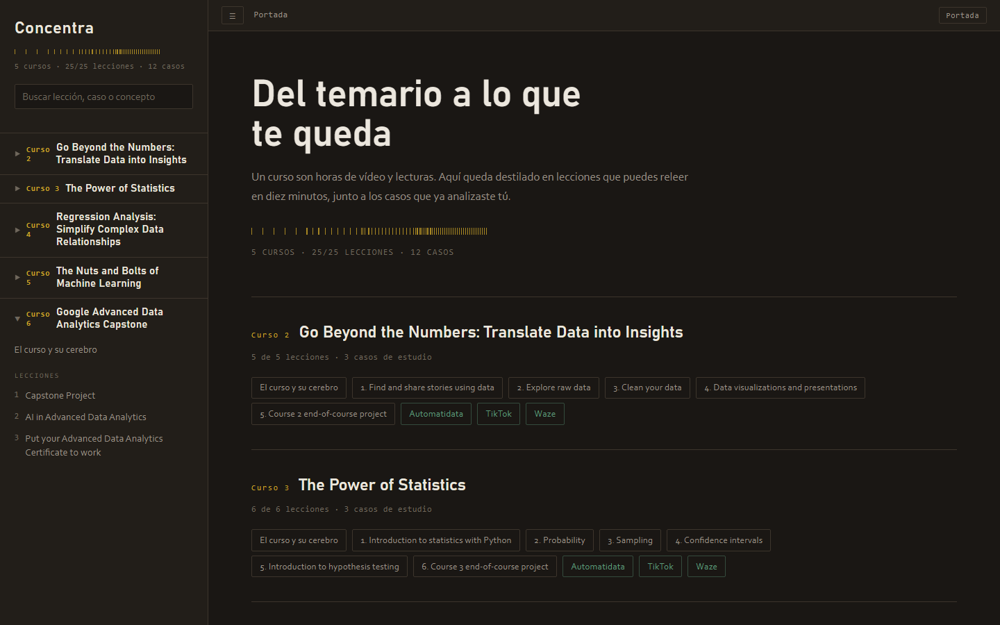

5 cursos, 25 módulos, 12 casos de estudio.
Concentra
Convierte el temario público de un curso en una hoja de estudio que sí puedes consultar después.

- El problema
- Terminas un curso en línea y tres semanas después tienes el certificado y nada del contenido. Los apuntes tomados mientras miras no son apuntes que se puedan consultar.
- Cómo lo resolví
- El mapa de módulos se genera del temario, nunca se escribe a mano. Alrededor escribo el glosario, la receta, los tropiezos y las preguntas de repaso, con analogías de metalurgia.
- El resultado
- Una hoja por módulo que sigue sirviendo un año después: ejemplo resuelto antes que la teoría, código explicado línea por línea con su salida real, y las trampas escritas.
Medido
23 rondas de corrección solo para el primer curso
El Curso 3 necesitó 23 pasadas hasta quedar bien. El procedimiento que salió de ahí está escrito en MANUAL.md, y hoy tres verificadores automáticos tienen que pasar antes de cada commit. Saltárselo es repetir el trabajo tres veces.
Pago los cursos, los veo y se me olvidan. No tenía dónde consultarlos después de forma condensada, así que me lo construí.
Son mis propios apuntes, reescritos desde cero después de cada módulo: un ejemplo resuelto antes que la teoría, el código explicado línea por línea con su salida real, y las trampas en las que caí. Espero que le sirvan a alguien más.
El sitio no tiene ni una dependencia, solo la librería estándar de Python, y eso significa que sigue compilando en una máquina donde instalar cualquier cosa es lento.
Hecho con
- Python standard library
- HTML
- CSS
- matplotlib